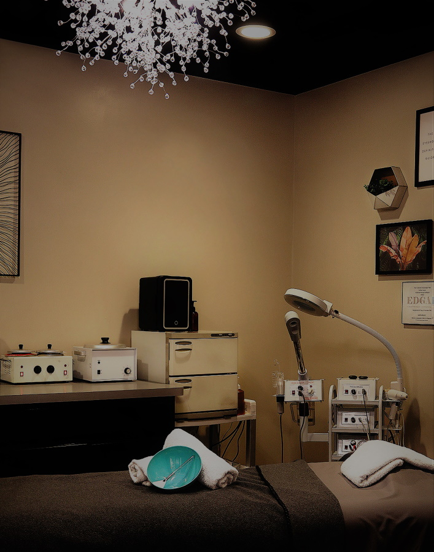
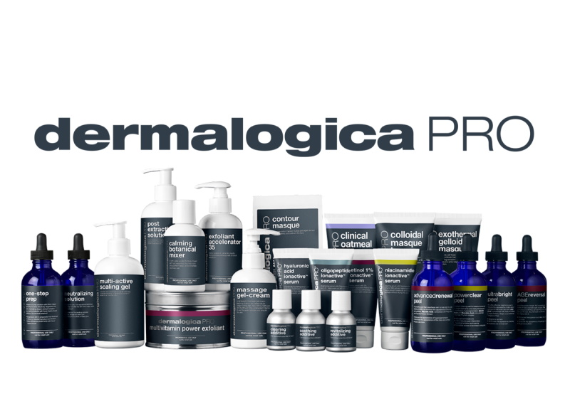
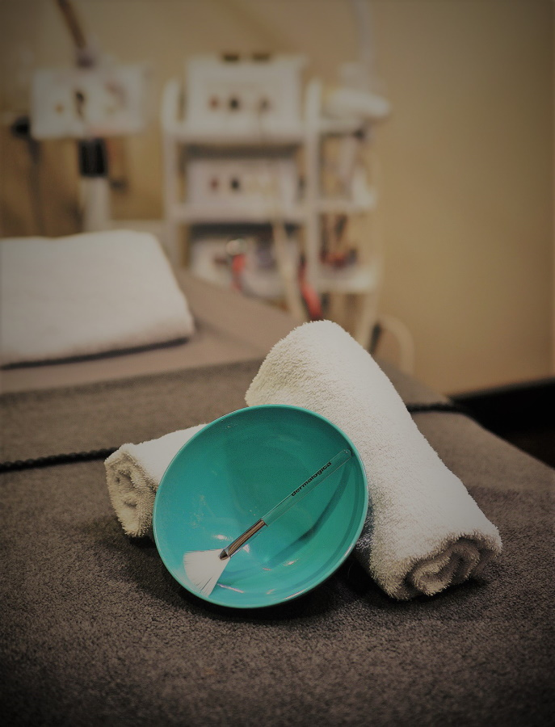

Facials



Pricing is based on the level of the Skin Therapist providing the service and is listed below as Associate Skin Therapist / Senior Skin Therapist.
Facials
-
Focus Facial$62 / 68
Focus on your most pressing skin needs to target a specific area for treatment. Our expert skin therapists will analyze your skin, and then perform a fully customizable mini facial to address your most pressing skin concerns or provide relaxation. This facial includes a deep double cleanse, moisturizer, and SPF.
-
Custom Signature Facial$90 / 96
This treatment is designed and customized to meet your exact skin’s needs based upon your personal Face Mapping® skin analysis. Delivering visible results through Dermalogica’s professional strength formula, you have never experienced a more thorough and relaxing facial. Enjoy a deep double cleanse, exfoliation, ultrasonic extractions, along with tailored treatments and masking addressing your skin’s specific needs. This facial also includes a hand and arm massage during masking.
-
Dermaplane Treatment$70 / 76
This treatment focuses specifically on the benefits of dermaplane. This treatment includes a deep double cleanse followed by a manual exfoliation to gently remove the outer layer of dead skin and fine facial hair, followed by a moisturizer. Please note this is for the dermalplane only and is not a facial.
-
Dermaplane Custom Facial Deep Treatment$110 / 118
This treatment will make your skin glow, feel smoother and appear healthier, brighter, and more youthful. Treatment includes a tailored facial with specialized manual exfoliation to gently remove the outer layer of dead skin and fine facial hair, professional serums to target specific skin concerns, soothing mask, moisturizer, and SPF finish this treatment. * DO NOT BOOK IF: Taking blood thinners, uncontrolled diabetes, active acne or acne meds, auto immune, retinol, Rosacea, cold sores
-
Nano Needling Dermaplane Treatment$165 / 175
This Treatment is going to maximize your results with the combination of a Dermaplane treatment and Nanoneedling LuminFusion. Skin is manually and chemically exfoliated then professional serums are infused into the skin. The treatment is finished with a custom masque combined with LED light therapy.**DO NOT BOOK IF: skin has an open wound, active infection, active acne. If client is allergic to metal, had Botox or other injectable in the last 2 weeks, has waxed in the last 5 days.
-
Nano Needling Dermaplane Treatment Packages of 3/6$420 / 790
-
Nano Needling LuminFusion$125 / 134
Nano needling service is targeted for those clients that want visibly smoother skin texture with zero downtime! Resurfacing actives and professional serums are infused into the skin with a unique device which uses tiny cones to maximize penetration. LuminFusion is a supercharged skin service which takes luminosity to a whole new level with the Dermalogica Pro Pen and masques combined with LED light therapy.
-
Nano Needling LuminFusion Package of 3/6$315 / 600
-
Pro Power Peel$110 / 118
A customized Dermalogica professional peel for the face and neck designed to resurface dull, dry skin and reveal a smoother, brighter, more refined complexion. Your esthetician will select the best peel for your skin’s needs to target concerns such as texture, uneven tone, pigmentation, fine lines, congestion, breakouts, redness, or inflamed acne. Includes a deep double cleanse, customized peel, Pro Power Eye Peel, soothing mask, moisturizer, and SPF.** Do not book if you have had any resurfacing treatments, Botox or other injectable in the last 2 weeks, if you are pregnant or breast feeding. Do not wax or use Retinol A 72hrs prior to peel.
-
Men's Fitness Facial$55 / 60
Treats issues, such as dehydration, black heads, and shaving irritation.
-
Back Cleansing Treatment$65 / 72
Specially designed for the back and focuses on removing impurities and congestion from back pores. A deep pore cleanse followed by a relaxing steam to open the pores, an exfoliation and extractions. After a light massage a custom mask is applied followed by moisturizer.